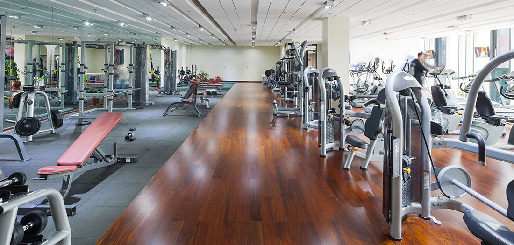

We are the original, the place where it all began.
More than 20 years ago, Armand Moreno opened a modest fitness center in Kansas, Texas and began a tradition of commitment, passion and dedication that is now practiced at more than 30 locations across the globe.
Our gyms are built to help people realize their goals and find their inner strength. We combine the most diverse amenities in the industry with the best personal training to deliver the ultimate fitness experience.
Silverline Gym... Become a Better You™ ."
Silverline Gym is a place where fitness, science, education and research come together under one roof. And it’s where new ideas and effective solutions for health and wellness are constantly being developed.
With over 94,000 square feet in the newly refurbished main Texas branch that’s home to the world’s most advanced approach to whole-body fitness, you’ll find everything you need to gain measurably improved general fitness and a new, improved perspective on life.
